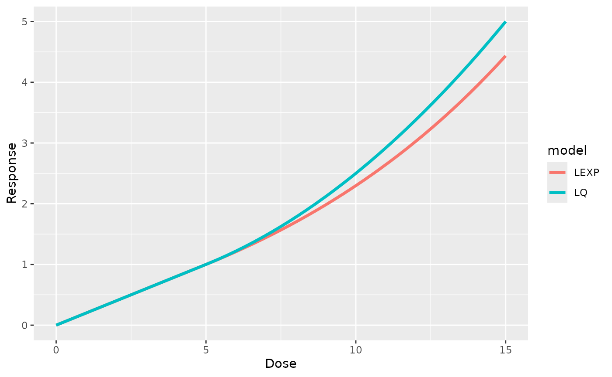
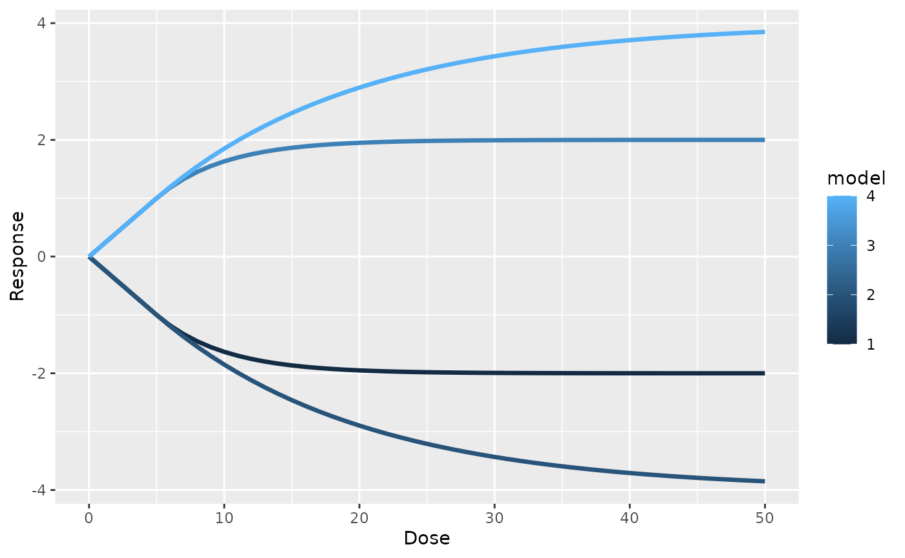

Sys.setenv(OMP_THREAD_LIMIT = 1) # Reducing core use, to avoid accidental use of too many cores
library(Colossus)
library(data.table)
#>
#> Attaching package: 'data.table'
#> The following object is masked from 'package:base':
#>
#> %notin%
if (system.file(package = "ggplot2") != "") {
library(ggplot2)
}Dose Response Formula
Colossus features a term composed of the sum of multiple
linear and non-linear elements which can be used to define many
dose-response curves used in radiation epidemiology. These terms are
referred to as dose-response terms, but there is nothing prohibiting
them from being used for non-dose covariates. The following formulae are
available, reproduced from the starting description vignette.
For every subterm type, there are between 1 and 3 parameters that fully define the curve. The Linear-Quadratic and Linear-Exponential curves are continuously differentiable, so there are only 2-3 parameters that can be set.
The linear-quadratic and linear-exponential functions include special utility functions, to calculate the full sets of parameter given only the provided values. First is the Linked_Dose_Formula() function, which returns a complete vector of parameter values. This function could be used to graph the expected dose response curve.
# Suppose we have a linear-quadratic model
# an initial slope of 0.2 and a threshold of 5
para_0 <- c(0.2, 5)
# We might also have a linear-quadratic model
# same slope and threshold
# also an exponential slope of 0.1
para_1 <- c(0.2, 5, 0.1)
paras <- list(cov_0 = para_0, cov_1 = para_1)
# We pass a list of subterm formula options,
# either 'quad' or 'exp' to choose subterm options.
# The names of the tform and para lists should match.
tforms <- list(cov_0 = "quad", cov_1 = "exp")
res <- Linked_Dose_Formula(tforms, paras)
res_quad <- round(res$cov_0, 3)
res_exp <- round(res$cov_1, 3)
print("Linear-Quadratic Model")
#> [1] "Linear-Quadratic Model"
print(paste0("Threshold:", res_quad[1]))
#> [1] "Threshold:5"
print(paste0("linear slope:", res_quad[2]))
#> [1] "linear slope:0.2"
print(paste0("quadratic slope:", res_quad[3]))
#> [1] "quadratic slope:0.02"
print(paste0("piecewise intercept:", res_quad[4]))
#> [1] "piecewise intercept:0.5"
print("Linear-Exponential Model")
#> [1] "Linear-Exponential Model"
print(paste0("Threshold:", res_exp[1]))
#> [1] "Threshold:5"
print(paste0("linear slope:", res_exp[2]))
#> [1] "linear slope:0.2"
print(paste0("piece-wise intercept:", res_exp[3]))
#> [1] "piece-wise intercept:-1"
print(paste0("exponential slope:", res_exp[4]))
#> [1] "exponential slope:0.1"
print(paste0("exponential intercept:", res_exp[5]))
#> [1] "exponential intercept:0.193"
x <- (0:50) / 50 * 15
y0 <- ifelse(x < res_quad[1], res_quad[2] * x, res_quad[3] * x^2 + res_quad[4])
y1 <- ifelse(x < res_exp[1], res_exp[2] * x, res_exp[3] + exp(res_exp[4] * x + res_exp[5]))
y <- c(y0, y1)
c <- c(rep("LQ", length(x)), rep("LEXP", length(x)))
df <- data.table("x" = x, "y" = y, "model" = c)
if (system.file(package = "ggplot2") != "") {
g <- ggplot2::ggplot(df, ggplot2::aes(x = .data$x, y = .data$y, group = .data$model, color = .data$model)) +
ggplot2::geom_line(linewidth = 1.2) +
labs(x = "Dose", y = "Response")
} else {
g <- message("ggplot2 wasn't detected. Please install to see the plot")
}
g
The linear-exponential subterm is somewhat unique in that a negative exponential slope () produces a dose response asymptote. There is also a utility function for finding the input parameters of a linear-exponential curve that approaches some desired maximum magnitude. In this case, we can use the Linked_Lin_Exp_Para() function. This function uses the desired intercept, linear slope, and maximum value to return the correct exponential slope. This can be used to help define starting values, without having to manually solve for the piece-wise exponential parameter.
# Suppose we used the same slope and intercept,
# our asymptote can be any value greater than 5*0.2
# Suppose we want the asymptote to be 5
threshold <- 5
slope <- 0.2
res <- Linked_Lin_Exp_Para(threshold, slope, 3)
print(paste0("Exponential slope: ", round(res, 3)))
#> [1] "Exponential slope: -0.1"
x <- c()
y <- c()
c <- c()
i <- 0
for (slope in c(-0.2, 0.2)) {
for (max in c(2, 4)) {
i <- i + 1
res <- Linked_Lin_Exp_Para(threshold, slope, sign(slope) * max)
res <- Linked_Dose_Formula(list(temp = "exp"), list(temp = c(slope, threshold, res)))$temp
xt <- 0:50
yt <- ifelse(xt < res[1], res[2] * xt, res[3] - sign(slope) * exp(res[4] * xt + res[5]))
x <- c(x, xt)
y <- c(y, yt)
c <- c(c, rep(i, length(xt)))
}
}
df <- data.table("x" = x, "y" = y, "model" = c)
if (system.file(package = "ggplot2") != "") {
g <- ggplot2::ggplot(df, ggplot2::aes(x = .data$x, y = .data$y, group = .data$model, color = .data$model)) +
ggplot2::geom_line(linewidth = 1.2) +
labs(x = "Dose", y = "Response")
} else {
g <- message("ggplot2 wasn't detected. Please install to see the plot")
}
g
Using The Different subterms
These subterms are used like any other subterm in the model, except that multiple parameters are defined. The following table lists the model subterms used:
| Subterm Type | Equivalent Aliases |
|---|---|
| Exponential | “loglin-dose”, “loglinear-dose”, “log-linear-dose” |
| Linear Threshold | “lin-dose”, “linear-dose”, “linear-piecewise” |
| Quadratic | “quadratic”, “quad”, “quad-dose”, “quadratic-dose” |
| Step Function | “step-dose”, “step-piecewise” |
| Linear-Quadratic | “lin-quad-dose”, “linear-quadratic-dose”, “linear-quadratic-piecewise” |
| Linear-Exponential | “lin-exp-dose”, “linear-exponential-dose”, “linear-exponential-piecewise” |
When applied to a model and used for a regression, each parameter will be listed in the result table. The following table covers what subterm type is listed for each special parameter:
| Subterm | Table Result Entry | Description |
|---|---|---|
| Exponential | loglin_top | parameter in the exponent of the term, |
| Exponential | loglin_slope | parameter multiplied by the exponential assumed to be 1 if not given, |
| Linear Threshold | lin_slope | slope for the linear term, |
| Linear Threshold | lin_int | intercept for the linear term, |
| Step Function | step_slope | step function value, |
| Step Function | step_int | step function intercept, |
| Quadratic | quad_slope | parameter multiplied by the squared value, |
| Linear-Exponential | lin_exp_slope | Linear slope term, |
| Linear-Exponential | lin_exp_int | Intercept between linear to exponential, |
| Linear-Exponential | lin_exp_exp_slope | Slope term in the exponential, |
| Linear-Quadratic | lin_quad_slope | Linear slope term, |
| Linear-Quadratic | lin_quad_int | Intercept between linear to quadratic, |
The linear-exponential and linear-quadratic curves must be either completely fixed or completely free. In contrast, the exponential, linear threshold, and step-function curves can be partially fixed. The exponential term can be provided with only the covariate in the exponent and assume the magnitude to be 1. The linear threshold and step functions can be provided a fixed threshold covariate, which can be used to define a linear-no-threshold model or a combination of linear and step functions with known thresholds.